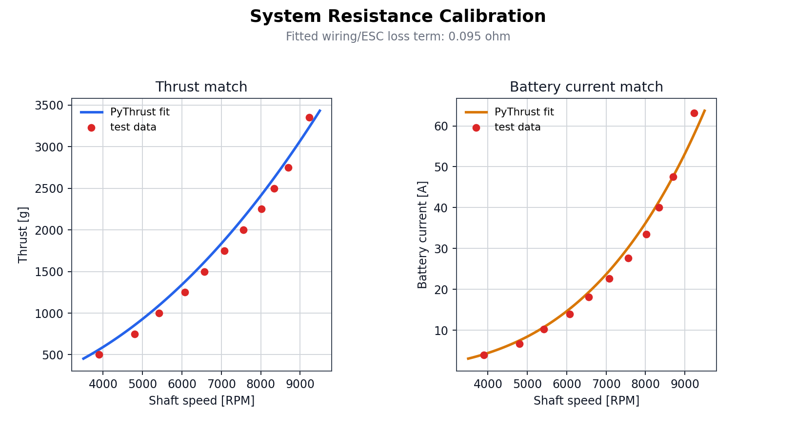
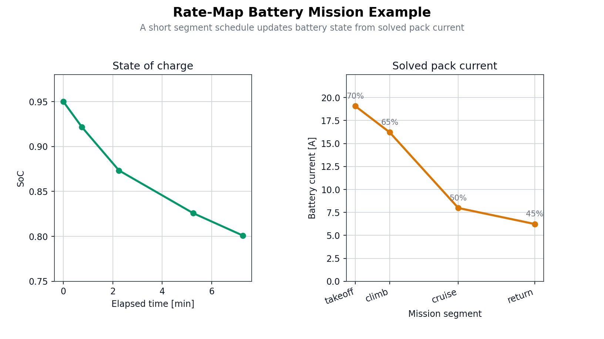
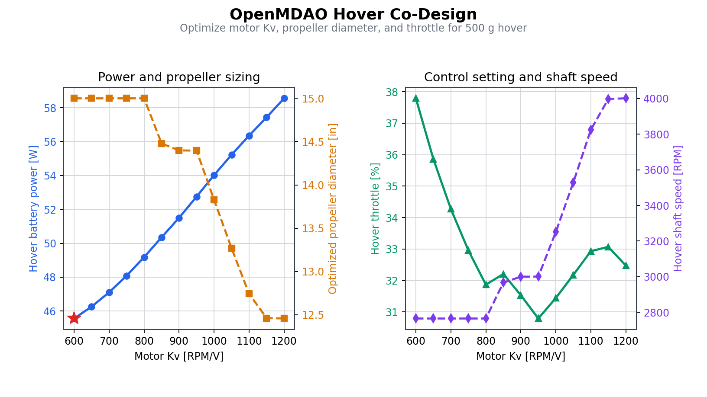

Examples
PyThrust includes runnable examples that show the main workflows: solving and calibrating propulsion models, inspecting rate-map battery behavior, and using OpenMDAO for hover co-design.
Run examples from the repository root so relative data/ and docs/images/
paths resolve correctly.
Requirements
| Example | Extra dependencies |
|---|---|
calibrate_system_resistance.py |
Core PyThrust dependencies |
rate_map_battery_point_states.py |
Core PyThrust dependencies |
rate_map_battery_mission.py |
Core PyThrust dependencies |
select_motor_from_database.py |
openmdao |
openmdao_hover_optimization.py |
openmdao, matplotlib |
Install the full example environment:
System Resistance Calibration
Script:
This example identifies the lumped system resistance for a motor, propeller, fixed-voltage battery, ESC, and wiring setup.
It uses:
| Input | Value or source |
|---|---|
| Motor | Datasheet Kv, resistance, no-load current, and current limit |
| Propeller | APC_13x6.5E from data/propellers/apc_202602 |
| Battery | Fixed 4S nominal voltage, 14.8 V |
| Test table | RPM, thrust in grams, and battery current in amps |
The output reports:
| Metric | Meaning |
|---|---|
| System resistance | Fitted SystemSpec.resistance_ohm |
| Thrust RMSE | Propeller-model thrust error against measured thrust |
| Current RMSE | Battery-current prediction error |
| Thrust R2 | Fit quality for the aerodynamic thrust prediction |
| Per-point table | Predicted vs measured thrust/current for each RPM row |
See Motor Calibration for the calibration model and equations.

Rate-Map Battery Point States
Script:
This example loads data/batteries/example_liion_cell.json, applies a 4S2P
pack topology, and evaluates the same state of charge under several requests.
It demonstrates:
| Query | Meaning |
|---|---|
state_at_current |
Terminal voltage and power at a requested pack current |
state_at_c_rate |
Current/voltage behavior at a requested cell C-rate |
state_at_voltage |
Current required to hold a requested pack voltage |
state_at_power |
Current and voltage for a requested pack power |
state_at_load_resistance |
Battery behavior under a resistive load |
state_at_power_loss |
Battery behavior for a requested internal loss power |
| Infeasible power | How the model reports a power limit |
This example is intentionally independent from the propulsion solver. It validates the battery model surface before mission or solver integration.
Rate-Map Battery Mission
Script:
This example couples RateMapBattery to PropulsionSolver over a short
segment schedule. Each segment solves the propulsion operating point using the
current battery state, reports pack current and voltage, then integrates state
of charge from the solved battery current.
It demonstrates:
| Step | Meaning |
|---|---|
| Load cell data | Use data/batteries/example_liion_cell.json with explicit series and parallel counts |
| Solve segment | Pass battery_state into solve_operating_point(...) |
| Read outputs | Inspect battery_voltage_v and battery_current_a on OperatingPoint |
| Advance state | Use integrate_current(...) to update SoC and delivered energy for the next segment |

Motor Selection
Script:
This example combines theoretical co-design with real motor database lookup.
Workflow:
- Load
APC_13x6.5Epropeller data. - Use OpenMDAO to find an efficient theoretical motor/propeller/throttle combination for hover.
- Load the brushless motor database from
data/motors. - Search real motors near the optimized Kv and current requirement.
- Print the top candidates sorted by winding resistance and weight.
The optimization target is a hover thrust of 4.903 N, approximately 500 gf.
See Component Databases for motor catalog format and query helpers.
OpenMDAO Hover Optimization
Script:
This example demonstrates OpenMDAO-based propulsion co-design and a parametric Kv sweep.
It performs three stages:
- Run the baseline propulsion model.
- Optimize motor Kv, propeller diameter, and throttle for a fixed hover thrust.
- Sweep Kv and re-optimize diameter/throttle at each point.
The generated plot is saved to:
The plot shows:
| Panel | Shows |
|---|---|
| Power and propeller sizing | Hover battery power and optimized propeller diameter |
| Control setting and shaft speed | Optimized throttle setting and shaft speed |

See Propulsion Solver for the operating-point solver used inside the OpenMDAO component.